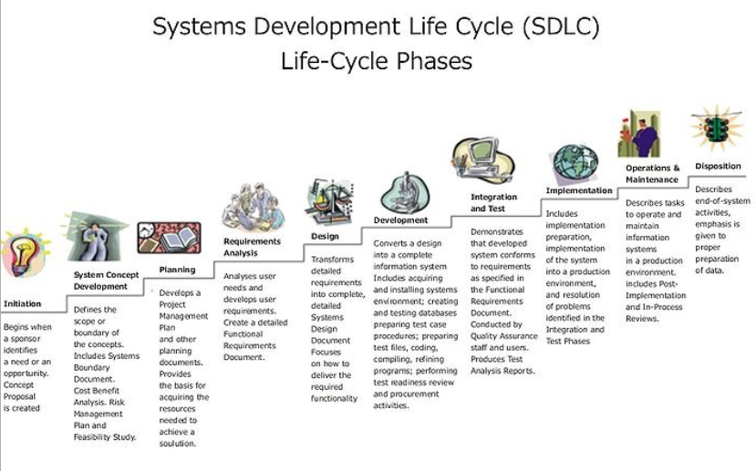
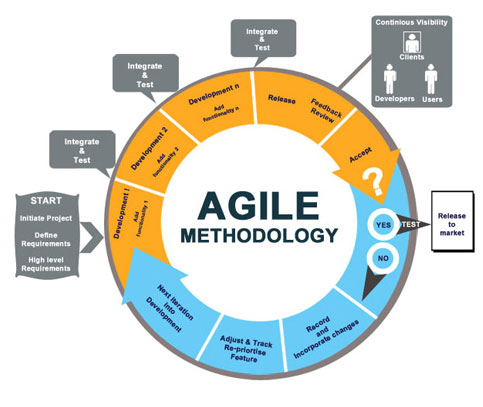

The Software Lifecycle and Software/Quality Assurance Testing
I can just start coding right?

The software lifecycle overview
User Testing vs Software/Quality Assurance Testing
What are the differences?
Exercise
Perform a user test on this website
What is Software Quality Assurance?
SQA is the overarching and systematic process under which a customer specified product or service is created.
SQA organizes, monitors, improves and audits the product or service during every step of the software development lifecycle focusing on the prevention of problems that software development is prone to create.
What is Software Testing?
Software testing describes a series or set of planned activities, under controlled conditions, which are intentionally designed and executed to uncover failures of the product or service being developed.
Errors and bugs are brought to light with testing, and any resulting failures are recorded, detailed and forwarded back to the development team for additional review and/or repair.
"Bug?"

Check out more about Grace Hopper here
Why do companies need this?
They want to know:
- If the software they built WORKS (does the program run?)
- Where the software has BUGS (where does the software stop running? What parts of it don’t do what they’re supposed to?)
- Does it still work for everyone (if you click in an unusual place, does it still work as intended?)
- What it is missing (do you need a BACK button?)
Trying to avoid this...
Have you ever encountered a bug when working on a computer?
Why does software have bugs?
- Lack of and/or poor communication between the customer and developer
- A natural result of human factors, trying to mix human nature with logical programming, compounded by the fact that multiple humans were involved in writing the code
- The gluing together of many small fragments (units) of code into one large and unwieldy program
- Misinterpretation of the requirements
- Compatibility issues between application software, operating systems and target environments
- Size and complexity of the product being developed
- Programming errors by developers when writing code
It’s not about finding WHETHER the software has defects - all software does.
It’s about finding how many bugs or defects or oversights exist and where they are.
Different Types of Testing
- Unit testing: The brick of a house
- Integration testing: The wall made of many bricks
- System testing: The whole house
- User acceptance testing: The potential buyer of the house
Important Vocabulary
When I say “software product” I mean…
One or more pieces of software code that meet a need - or want - someone has.
MVP
The minimum viable product: the product that effects the fewest number of functions that meet a core product goal.
Iterating
Take one step at a time. Build one function at a time. Succeed with that function before moving to the next. Build tools that rely upon one another in a logical order.
A software product is “feasible” when…
It is economical: it costs less than it earns.
It is operational: it serves its intended purpose.
It technically works: it doesn’t crash!
Backlog
The “to do” list of your software development needs.
Metrics
A metric is a standard of measurement. Software metrics are the statistics describing the structure or contact of a program. A metric should be a real objective measurement of something such as the number of bugs per lines of code.
“ROI” (Return on Investment)
Given two features that have EQUAL value to the customer, you would first build the one that took less work.
The Software Development Lifecycle (SDLC)
Software Development Life Cycle (SDLC), in systems engineering and software engineering refers to the process of creating or altering systems, and the models and methodologies that people use to develop these systems.
SDLC Broken Down
Big Picture
SDLC should result in a high quality system that:
- meets or exceeds customer expectations
- reaches completion within time and cost estimates
- works effectively and efficiently in the current and planned IT infrastructure
- is inexpensive to maintain and cost- effective to enhance
What kind of requirements?
- MARKETING REQUIREMENTS: what you want to sell, and to who.
- PRODUCT REQUIREMENTS: operations your product needs to complete.
- SYSTEM REQUIREMENTS: external resources your product needs to run.
A Good Requirements Tester
First, look at all the requirements!
- For each requirement you are testing:
- the same meaning should be obvious to everyone in the room.
- it can produce a measurable result (so you can verify)
- it’s possible
- it’s irreplaceable with other parts of the product/design
- all the requirements together describe the whole product
A Good Requirements Tester
Second, test the development!
- You’ll need to have and know:
- how long you have for testing and when results are due
- what external resources you’ll use to test
- what functions/requirements you will test and how you will test them
- what testing instruction you’ll follow and what result you should get
Why are requirements important?
Write your own requirements
Questions:
- What’s the goal? What problem(s) will it solve?
- What functions should it have?
- Who will use it?
- When will it be useful?
- What information or data sets does it rely on?
- What pieces already exist?
- What costs will be incurred to build it?
Why might requirements change?
Test Case
Each requirement you are testing should have all this information organized into a TEST CASE. Each testing project is a collection of TEST CASES. Expect a TEST CASE for each combination of:

Writing your own test cases
You will map each test case to its corresponding requirement before you start any testing project.
Help Complete Our Survivors.io Test CasesMake a copy of this spreadsheet in Google Sheets!
Remember
We’ll always leave time between testing and the planned launch date. Why?
- Developers need time to fix bugs!
- Once things are fixed, they need to be tested again!
- The last thing you test could be the biggest problem!
Where do you test?
A word on the testing environment
When do you test?
earlier = cheaper = better
You win good reviews, happy clients, and more income if you deliver:
- organized feedback
- detailed feedback
- complete feedback
- timely feedback
on the product that helps the client fix or improve it
HOW DO YOU TEST?
BE ORGANIZED
BE DETAILED
BE CONSISTENT
USE SCREENSHOTS!
As a bonus, if you run a detailed test on a product you will understand how it works almost as well as the developer who built it!
THE MORE PROBLEMS YOU FIND, THE BETTER.
Bug Reports
In a great bug report, you will find:
- START the report with a summary of the big problem.
- DESCRIBE the steps you took to reach the problem, the environment your were using, and how it might effect a customer.
- Include things like your device type, OS version/BIOS version, browser type, connection speed and type. Make sure the problem is not you (like a weak wifi signal).
Bug Report continued
- Report problems that are REPRODUCIBLE - in other words, they will be there not matter who follows the steps you did. Make sure you can reproduce every problem at least 3 times with the process in your report.
- Still make a note if it happened once, but add that it wasn’t reproducible.
- SEPARATE each bug into a different report segment. Organize them according to how serious they are.
In an Awesome bug report, you'll find:
- LOTS of detail.
- The same names and terminology found in the product.
- A comparison of the actual results to the expected results in the test plan.
- Says, “product wasn’t doing x when y” NOT “there’s a problem.”
- Statement of Severity….
Sample severity scale:
- P0: this problem makes the product useless or makes it fail its essential function. It should be fixed ASAP and before all others.
- P1: this problem seriously affects the product’s usability and needs to be fixed as soon as P0s are fixed.
- P2: this problem results in a noticeably poor user experience. It’s still a high-priority fix.
- P3: this problem degrades the user experience in ways that are not obvious to every user, or effects only a small portion of users noticeably.
- P4: this problem results in a noticeably poor user experience (but not uselessness) for only some users or some cases. It’s still a high-priority fix.
- P5: this problem would be nice to fix but isn’t mission-critical.
Bug Report: Presentation Matters
Use neutral, descriptive statements to describe issues.
USE THE FORMAT AND TERMINOLOGY WE CREATE FOR THE PROJECT
DON’T insult individual developers or use personalized criticism
DON’T use humor or sarcasm - it won’t come across
Bug Report: Presentation Matters
Just state facts like this:
- “____ LINK redirects to the wrong place”
- “____ menu doesn’t open when clicked from ____”
- “____ exact sentence contains a typo”
Example Bug Report
Click hereSDLC Methods
There are many different ways for a company to set up their SDLC. A lot of it depends on the kind of company it is, the type of product (or website) they are making, and the complexity or the number of people working on the product.
- Easiest: U-shape
- Two main categories:adaptive ("agile") and predictive ("plan-driven") methods.
Agile
Agile methodologies generally promote a project management process that encourages frequent inspection and adaptation, a leadership philosophy that encourages teamwork, and self-organization and accountability
- Individuals and interactions over processes and tools
- Working software over comprehensive documentation
- Customer collaboration over contract negotiation
- Responding to change over following a plan
Agile: Sprints
Sprints: a set period of time during which specific work has to be completed and made ready for review.
The duration of a sprint is determined by the scrum master, the team's facilitator. Once the team reaches a consensus for how many days a sprint should last, all future sprints should be the same. Traditionally, a sprint can last from one week to 30 days.
Agile
Agile Scrum

Waterfall
The waterfall model shows a process, where developers are to follow these steps in order:
- Requirements specification (AKA Verification or Analysis)
- Design
- Construction (AKA implementation or coding)
- Integration
- Testing and debugging (AKA validation)
- Installation (AKA deployment)
- Maintenance
Like architects who build a house, the plan is to build the foundation first and not revisit.
Spiral
The steps in the spiral model can be generalized as follows:
- The new system requirements are defined in as much detail as possible. This usually involves interviewing a number of users representing all the external or internal users and other aspects of the existing system.
- A preliminary design is created for the new system.
- A first prototype of the new system is constructed from the preliminary design. This is usually a scaled-down system, and represents an approximation of the characteristics of the final product.
- A second prototype is evolved by evaluating the first prototype, defining the requirements of the second prototype, planning and designing the second prototype, and constructing and testing the second prototype.
Spiral Diagram

Example from the industry
Review
What is the most important process in a life cycle of a product and why?
The most important part of the life cycle is the requirement stage. The majority of bugs can be found in bad requirements and thus will save the company you work for millions of dollars. Bad requirements can cause confusion between teams and can create chaos at the workplace.
Review
Why would you log a defect?
It is the job of a tester to find bugs. If bugs are not logged, then there would be no record of the bug found and it would not get fixed. These errors would remain in the code when the customer received the product.
Review
What are metrics?
A metric is a standard of measurement. Software metrics are the statistics describing the structure or content of a program. A metric should be a real objective measurement of something such as number of bugs per lines of code.
Review
What are requirements?
A requirement is a guideline to what the program or product is supposed to do. Good requirement need to be clear, concise and unambiguous because there may be a large group of people that will read the requirement. A requirement also needs to be verifiable, feasible, necessary and complete.
When reading requirements, remember to ask:
Defect Lifecycle

Defect Lifecycle

Defect Lifecycle

Defect Lifecycle

Defect Lifecycle

Defect Lifecycle

Defect Lifecycle

Defect Lifecycle

Defect Lifecycle

Great link for more information on testing
Other Software QA and Testing Resources ThoughtWorksa Software Testing GlossaryTHE END
Thank you for your attention!